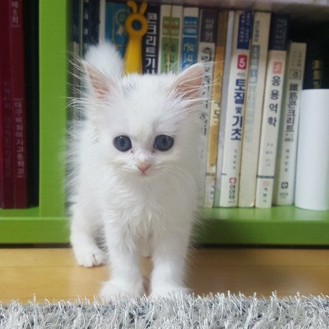
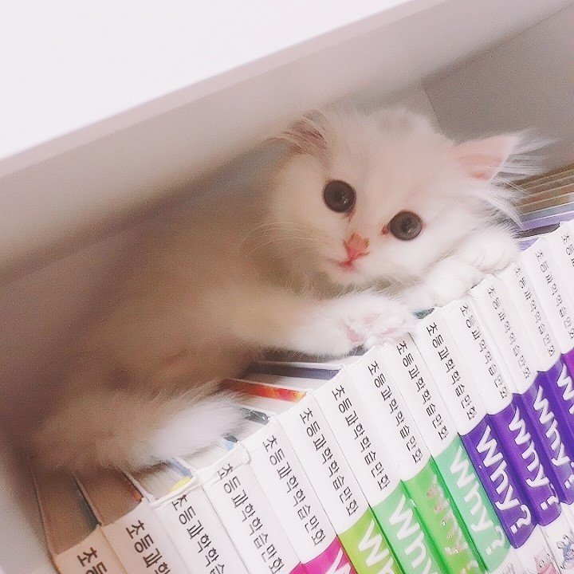

🎈
이마에 까만 점이 있는 아기 고양이
뭔가 억울해하는 것처럼 생겼다.
민들레 홀씨처럼 털이 삐죽삐죽하고
꼬리가 유난히 길며 주먹보다도 작았다.
아기라서 눈 색도 나오지 않았다.




🎉
고양이라 그런지 좁은 틈에서 잘 잤다.
창 밖을 보고 햇볕을 쬐는 걸 좋아하고,
방충망을 스파이더맨처럼 올라가기도 했다.
종이가 있으면 그 위에 앉아 방해하기도 했다.